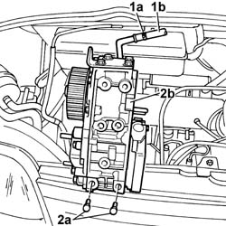

1084B16 ENGINE OIL PUMP - R+R VEHICLES WITH A/C
- Path
- Procedures > 10 ENGINE UNIT > 1084 ENGINE LUBRICATION SYSTEM > 1084B ENGINE OIL LUBRICATION CIRCUIT > 1084B16 ENGINE OIL PUMP - R+R VEHICLES WITH A/C
- Kind
- repair procedure (removal / refitting; the operation number is the code)
- Applies to
- engines: 2.8 JTD 8V; all production periods
- Interactive page
- https://sloeber94.github.io/elrnDB-fDct/en/#/244000933
Applies to: engines: 2.8 JTD 8V; all production periods
 Removing
Removing
 Refitting
RefittingOp. 7055B54 UNDER-ENGINE GUARD - R R
Op. 0010T84 COOLANT FOR AIR CONDITIONING SYSTEM DEHYDRATE AND RECHARGE
See in Op. 1048B22
See in Op. 1048B14
See in Op. 1048B50
Op. 1092D10 AIR CONDITIONER COMPRESSOR DRIVE BELT - R + R
Op. 5040A20 AIR CONDITIONER COMPRESSOR - R+R - INCLUDES FLUID LEVEL CHECK AND TOP UP IF NECESSARY
Op. 5040A26 COMPRESSOR MOUNT - R R
See in Op. 1084C10
See in Op. 1084B30
Op. 1084B36 ENGINE OIL FILTER AND HEAT EXCHANGER MOUNTING - R.R.
Op. 4130B20 POWER STEERING PUMP R R
See in Op. 1060F20
See in Op. 1060E10
See in Op. 1060E40
1. Open the securing band (1a) and release the pipe (1b).
2. Undo the fixing bolts (2a) and remove the oil pump (2b).

Applies to: engines: 2.8 JTD 8V; all production periods
Refitting
Removing- Place the engine oil pump in position and tighten the fixing bolts, checking the torque.
 | Value - daNm | Fastening | Component | Ø |
|---|---|---|---|---|
. | 2,5 | Bolt | ENGINE OIL PUMP | M8 |
- Connect the pipe to the oil pump using the band.
See in Op. 1060E40
See in Op. 1060E10
See in Op. 1060F20
Op. 4130B20 POWER STEERING PUMP R R
Op. 1084B36 ENGINE OIL FILTER AND HEAT EXCHANGER MOUNTING - R.R.
See in Op. 1084B30
See in Op. 1084C10
Op. 5040A26 COMPRESSOR MOUNT - R R
Op. 5040A20 AIR CONDITIONER COMPRESSOR - R+R - INCLUDES FLUID LEVEL CHECK AND TOP UP IF NECESSARY
Op. 1092D10 AIR CONDITIONER COMPRESSOR DRIVE BELT - R + R
See in Op. 1048B50
See in Op. 1048B14
See in Op. 1048B22
Op. 0010T84 COOLANT FOR AIR CONDITIONING SYSTEM DEHYDRATE AND RECHARGE
Topics linked from this page (10)
- 0010T11 ENGINE OIL CHECK LEVEL AND TOP UP
- 0010T70 POWER ASSISTED STEERING FLUID - REPLACE
- 0010T84 COOLANT FOR AIR CONDITIONING SYSTEM DEHYDRATE AND RECHARGE
- 1084B36 ENGINE OIL FILTER AND HEAT EXCHANGER MOUNTING - R.R.
- 1092D10 AIR CONDITIONER COMPRESSOR DRIVE BELT - R + R
- 3330D30 VACUUM PUMP - R+R
- 4130B20 POWER STEERING PUMP R R
- 5040A20 AIR CONDITIONER COMPRESSOR - R+R - INCLUDES FLUID LEVEL CHECK AND TOP UP IF NECESSARY
- 5040A26 COMPRESSOR MOUNT - R R
- 7055B54 UNDER-ENGINE GUARD - R R